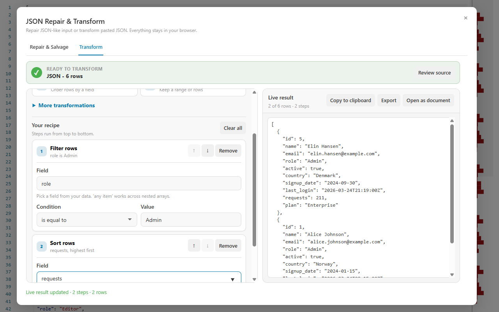

Copied logs, AI output, hand-edited configuration, and fenced snippets often look like JSON while failing a strict parser. CodePrettify repairs common problems, shows what changed, and lets you continue into a visual transformation recipe.
The workbench lists the repairs it applied. If the source is incomplete or semantically ambiguous, confirm the values against the originating system.
Hands-on repair tutorial
Recover a fenced Python-style payload without hiding the changes
Use the captured input above for this lesson. The important habit is to treat the repair report as evidence, not as a decorative success message.
Open Repair & Salvage
Choose More Actions → General tools → JSON Repair & Transform, or find it through the Command Palette. In the Windows app, it is also available from Tools. Select the Repair & Salvage tab.
Load the exact source you received
Paste the complete text, including surrounding prose and code fences, so the report can explain what it removed. If a compatible document is already open, choose Use document. Avoid hand-fixing the source first—you would lose the audit trail for those changes.
Decide whether partial JSON Lines salvage is acceptable
Leave the salvage checkbox (Salvage valid JSON Lines records when some records are invalid) off unless the input is JSON Lines and you deliberately accept dropping reported invalid records. With the option off, one bad record blocks the result. With it on, every excluded source line must be reviewed.
Analyze, then read the repair list in order
Choose Analyze & repair. For the sample, expect the report to mention the Markdown fence or surrounding text, quoted keys, converted single-quoted strings, Python booleans and null, and removed trailing commas. A change that extracts or semantically replaces content deserves more scrutiny than whitespace cleanup.
Compare repaired values with their source meaning
Verify that True became JSON true, None became null, and every string value remained unchanged. The tool can normalize recognizable syntax; only you can confirm that production, the region, and the enabled state are correct business values.
Stop when the source is incomplete or ambiguous
Missing commas, closing brackets, and unterminated strings are repaired but flagged at medium confidence — review those entries carefully. If the tool rejects the input outright (mismatched brackets, unsafe numbers, excessive nesting or size), return to the producing system. A refusal is safer than a plausible-looking document assembled from guesses.
Pass the reviewed result forward explicitly
Copy or download the clean JSON when repair is the only goal. To reshape it, choose Use result in Transform. This creates a separate working result; it does not overwrite the original file or the text you pasted.
Repair review checklist
Before using a repaired payload in code, a database, or another tool, confirm all six points.
The extracted object or array is the payload you intended.
Every semantic literal replacement has the expected meaning.
No JSON Lines record was excluded without explicit approval.
Strings, IDs, timestamps, and numeric values survived unchanged.
The repaired output parses as strict JSON.
The source remains available for comparison or audit.
Common repairs
Problems the repair pass can recognize
Wrappers and noise
Byte-order marks
Markdown code fences
Surrounding prose
First balanced object or array
Quotes and keys
Single-quoted strings
Unquoted object keys
JavaScript comments
Raw controls inside strings
Trailing syntax
Trailing commas
A final semicolon
Recognized JavaScript literals
Recognized Python literals
Structure completion
Missing commas inserted
Missing closing brackets added
Unterminated strings closed
Bare decimals given leading zeros
Inserted commas, added brackets, and closed strings carry medium confidence for extra review.
JSON Lines
Record-by-record validation
Explicit partial-salvage opt-in
Discarded source-line reporting
Array result for transformation
Confidence signals
Every repair listed
Warnings beside the result
Lower confidence for extraction
Extra review for semantic replacement
Safety boundaries
Unresolvable or ambiguous structure is rejected
Recovered truncations are flagged at medium confidence
No network requests, no mutation of the source
Bounded size, depth, and traversal
Transform example
Build a recipe and watch the result update
Once the input is valid structured data, add operations in order. Each step receives the result of the previous step, and the live output shows how many rows remain and how many steps were applied.
Repair produces a clean result and a human-readable list of changes.

A filter for role = Admin followed by descending request count returns two rows from six.
1
Filter the rows
Keep only records that match a field, comparison operator, and value.
2
Sort the result
Order matching rows by requests, timestamp, name, or another selected field.
3
Continue or export
Add another operation, copy the JSON, export it, or open the result as a new document.
Hands-on transform tutorial
Turn six usage records into a two-row admin report
Follow the recipe shown in the screenshot: keep administrators, order them by request volume, and retain only the fields needed for a short report. Each operation receives the result of the preceding step.
Start from reviewed structured data
Choose Use result in Transform after repair, or load valid JSON, JSON Lines, CSV, YAML, TOML, XML, or feed data. Confirm the live result shows the expected starting row count before adding operations.
Add a Filter operation
Choose Filter, select the role field, use the equality operator, and enter Admin. The field picker uses detected fields, types, and sample values to reduce typing mistakes.
Read the intermediate result
Confirm that only administrator rows remain and that the status reports two rows from the original six. If no rows match, inspect capitalization, value type, and field path before adding another step.
Add Sort after Filter
Choose Sort, select the request-count field, and use descending order. Because sorting runs after filtering, it orders only the two administrator records instead of doing work on rows that will be removed.
Select the report fields
Add Select fields and keep the user name, role, and request count. The output becomes smaller without changing the original source. Rename a field only when the downstream consumer requires a different key.
Test operation order
Move Select fields above Sort. If the selected fields no longer include the sort key, the later step cannot work as intended. Move it back and use this experiment to see why recipe order is part of the transformation.
Export the result, not the recipe preview
When the live result and row count are correct, copy, export, or open the transformed JSON as a new document. Keep the source and repair report until the output has been checked by its destination.
Expected result: two administrator objects, sorted from highest to lowest request count, containing only the fields selected for the report.
Recipe operations
Compose the transformation you actually need
Shape columns
Select fields, remove fields, or rename properties while keeping a readable step history.
Control rows
Filter, sort, limit, or remove duplicates from arrays of objects.
Reshape nesting
Expand a nested array field into one row per item when downstream tools expect a simpler record shape.
Summarize data
Group rows and calculate aggregates for quick inspection or export.
Reorder safely
Move or remove steps and let the workbench recalculate the result from the original input.
Keep provenance clear
The source document remains intact. The transformed output is a separate result you explicitly copy, export, or open.
Failure guide
Understand when to repair, when to transform, and when to stop
What you see
What it means
Best next action
High-confidence formatting cleanup
The tool made bounded syntax changes such as removing a fence or trailing comma.
Still review the report, then parse or transform the result.
Extraction or semantic-literal warning
The tool selected content from a wrapper or changed Python/JavaScript meaning into JSON.
Compare each changed value with the source system.
Invalid JSON Lines record
One physical record cannot be parsed safely.
Fix the source, or opt into partial salvage only when losing the reported line is acceptable.
Incomplete transformation step
A required field, operator, value, or option is missing.
Complete the step; the previous valid preview remains visible.
“No rows matched”
A completed filter removed every row.
Check field path, value type, spelling, and operation order, or remove that step.
Unsafe or truncated structure
The tool cannot recover strict JSON without guessing.
Stop and obtain a complete payload from the producer.
FAQ
Repair and transform questions
Will the repair tool invent missing values?
No. It repairs recognizable syntax and wrapper problems. It does not fabricate domain values that are absent from the source.
Does repair overwrite the current file?
No. The original remains unchanged until you deliberately copy, export, or open the repaired result.
Can I transform an object as well as an array?
Select, Remove, and Rename work on a single object as well as arrays. Filter, Sort, Unique, Flatten, Group, and Limit need an array of rows and report an error if the current stage is a single object.
Can I reuse a recipe?
Yes — the workbench automatically restores your most recent recipe (stored locally on the device) the next time you open it. For automation outside the UI, translate the visible recipe into application code.